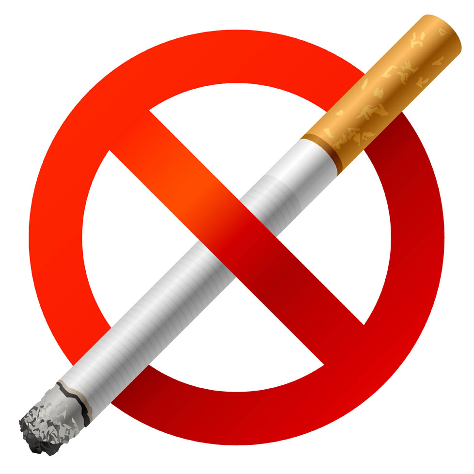
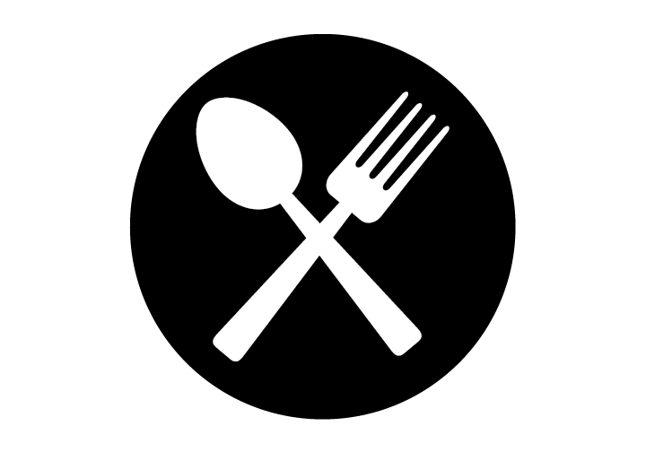
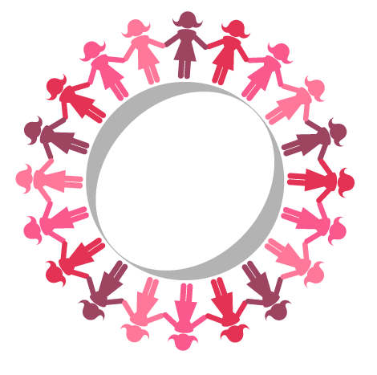

The end of cancer treatment is often a time to rejoice as it marks the end of the demands of treatment. One can look forward to getting back to a normal life. However, it may also be a cause for worry with concerns about the after-treatment effects and the possibility of recurrence of the cancer.
Here are some tips for cancer survivors to follow post-treatment:
- Regular follow-up care with your doctor is very important. Meet your doctor every 3 to 4 months during the first 2 to 3 years after treatment, and once or twice a year after that.
- It is important to start living a healthy life. Quit smoking and maintain a healthy weight through regular physical activity.
- A healthy, well balanced diet may help reduce your risk of breast cancer recurrence. Make healthy food choices after your treatment.
- Control your calories to achieve a healthy weight
- Eat more fruits and vegetables
- Eat more plant-based foods
- Eat more fibre
- Eat less fat
- Eat less sugar
- Develop a wellness plan that includes ways you can take care of your physical, emotional, social, and spiritual needs.
- You may experience fatigue after treatment. Physical activity through an exercise program can help to reduce the loss of physical functioning caused by breast cancer. Physical activity can be empowering and can enhance your overall well-being.
- It is common to experience stress, depression, and anxiety during and after cancer treatment. It may be helpful to talk to family or friends about your feelings.
- Be part of a support group to share your feelings and experiences with others.



